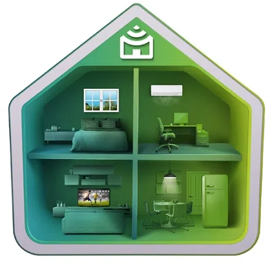
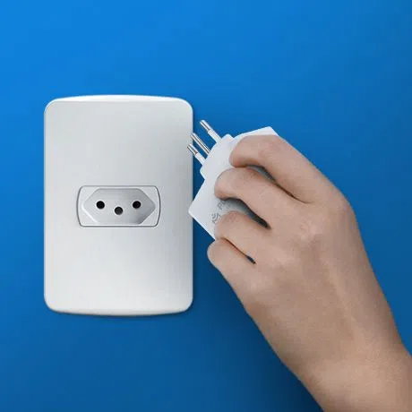
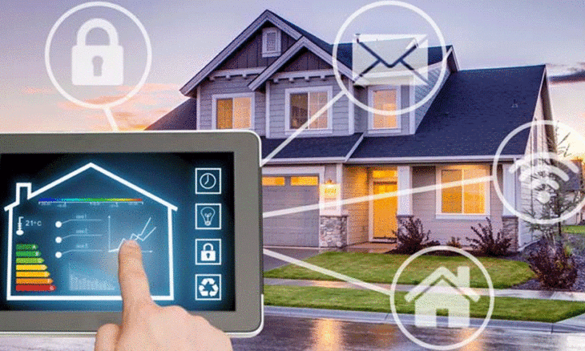

O que é Smart Home?
O avanço da tecnologia proporciona diversas oportunidades de tornar as coisas mais simples e adicionar mais qualidade de vida ao nosso dia a dia. Assim é em todas as áreas e não poderia ser diferente no lugar mais importante da sua vida: a residência As chamadas casas inteligentes ou smart homes já não estão mais restritas a poucas pessoas. Ter internet Wi-Fi é praticamente o único pré-requisito para que você possa desfrutar de uma linha completa de acessórios para tornar o seu dia a dia mais fácil. Vamos aprender mais sobre esse conceito e começar a montar a sua smart home?
Uma smart home pode ser definida como um ambiente no qual um ou mais dispositivos estão conectados à internet e podem ser controlados a distância, via smartphone ou comandos de voz. O melhor de tudo: essa é uma tecnologia avançada, mas que está ao alcance de todos, pois o custo é cada vez menor e a instalação é cada vez mais simples.
57% dos brasileiros acreditam que as smart homes terão grande impacto nas suas vidas.
Como montar uma smart home?
É mais simples do que você pode imaginar. Para grande parte das soluções, ficou no passado aquela ideia de que implementar sistemas automatizados requer mão de obra especializada ou grandes intervenções no ambiente. As soluções de smart home da Positivo Casa Inteligente são plug and play: é conectar e começar a utilizar.
O princípio de comunicação dos dispositivos é pela internet.Portanto, certifique-se de ter uma conexão Wi-Fi estável na sua residência antes de começar. Um roteador de duas bandas (2.4 Ghz e 5 GHz) também torna a conectividade mais eficiente. Se isso tudo estiver funcionando então você já está pronto para começar
Quais são as vantagens de um sistema Smart Home?
Quando falamos sobre as vantagens de uma Smart Home, a otimização do tempo dedicado às tarefas domésticas é um dos principais benefícios. Essa característica facilita a rotina de todos, mas principalmente de pessoas com mobilidade reduzida e idosos. Vale destacar que uma Smart Home também possibilita a economia de água, luz e gás, já que é possível controlar o funcionamento dos aparelhos de forma mais rápida e prática. Aquela história de sair de casa e esquecer de apagar as luzes não é mais um problema, já que em uma Smart Home é possível programar um horário específico para que a luz de todos os cômodos seja apagada. Incrível, né?
A segurança de uma Smart Home também é maior, pois os moradores podem ter acesso a sistemas de vigilância e checá-los com facilidade, mesmo estando fora de casa. Por isso, os dispositivos mais importantes, como fechaduras e até mesmo sistemas de câmera e monitoramento, devem ser instalados por empresas especializadas e confiáveis. Já o controle de lâmpadas e acionamento de mídia, que não compromete muito a segurança do imóvel, pode ser feito pelos próprios usuários.
Como criar um projeto de arquitetura para Smart Home?
Diante de tanta tecnologia e dispositivos ultra inteligentes, transformar a casa em Smart Home é uma tarefa complexa? A resposta é não. Ficou no passado a ideia de que precisa de muita mão de obra e intervenções no ambiente para a criação de uma Smart Home, mas isso não significa que a necessidade de um projeto de arquitetura não existe.
Para a criação de uma Smart Home eficaz, é importante entender qual é a rotina do cliente e como encaixar os dispositivos da melhor forma possível. Não adianta encher a casa de sensores e adaptadores se o uso do morador não for avançado, não é mesmo? Por isso, é importante fazer um briefing detalhado para entregar uma Smart Home impecável.
Outra dica para transformar a casa em Smart Home é contar com um bom projeto de iluminação. Criar pontos de luz estratégicos é uma forma de valorizar ainda mais os ambientes e trazer conforto para os moradores. Quando falamos sobre Smart Home, também é possível incluir no projeto espaços pensados para aproveitar ao máximo essa tecnologia, como uma sala de TV.
